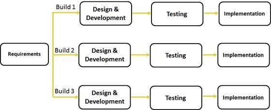
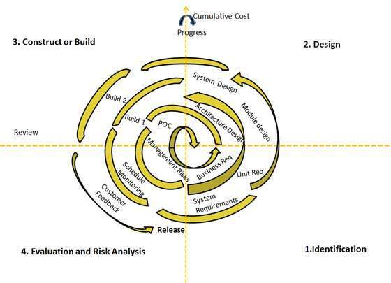
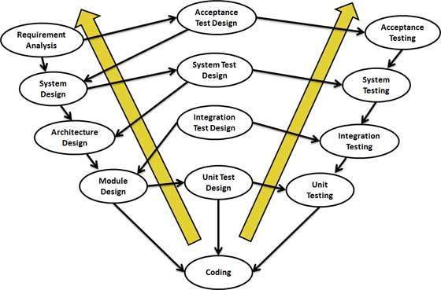
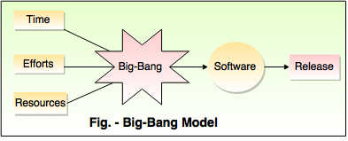

Software Development Life Cycle
Waterfall Model design

Advantages
- Clear project objectives.
- Stable project requirements.
- Progress of system is measurable.
- Strict sign-off requirements.
Iterative Model design

Advantages
Spiral Model design

Advantages
V- Model design

Advantages
- This is a highly disciplined model and Phases are completed one at a time.
- Works well for smaller projects where requirements are very well understood.
- Simple and easy to understand and use.
- Easy to manage due to the rigidity of the model.
- each phase has specific deliverables and a review process.
Big Bang Model

Advantages
- This is a very simple model.
- Little or no planning required.
- Easy to manage.
- Very few resources required.
- Gives flexibility to developers.
- Is a good learning aid for new comers or students